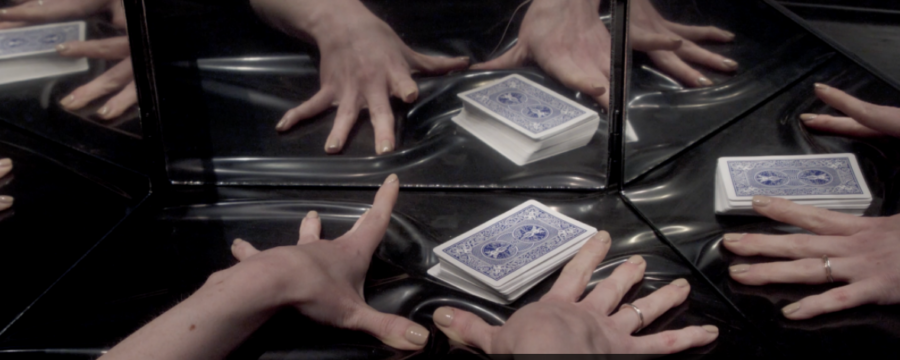

On Wonder, Mind, & Magic: Jeanette Andrews
Artist Jeanette Andrews applies sensory illusion techniques and her interest in the selective nature of attention and the bounds of perception to create artworks that explore magic, multiple realities, and the human psyche. This summer exhibition will present interactive and site specific works including installation, sculpture, video, sound, and performance, alongside new work developed while Artist in Residence at MIT’s Center for Art, Science, and Technology in 2024-25.
The exhibition represents a return home for Andrews, who grew up in Wheaton, IL. She cites the Elmhurst Art Museum as an early influence in her pursuit to a career honing her technical skills and applying magic and sensory illusion techniques to create artworks. On Wonder, Mind, & Magic will be the artist’s first solo museum exhibition and is curated by Liz Chilsen, Manager of Exhibitions & Collections.
About the Artist
Jeanette Andrews is a New York-based artist working at the intersections of illusion, performance, installation, film, and audio. Her studio practice bridges the worlds of illusion, installation, and conceptual art, creating interactive vignettes and surreal, multisensory experiences that investigate perception, cognition, and the seemingly impossible. She invites audiences to co-create her illusory performances which function as live thought experiments. She has presented numerous commissioned works with the Museum of Contemporary Art Chicago, as well as for the Quebec City Biennial and Boca Raton Museum of Art, presented talks for Cooper Hewitt, Chicago Ideas Week, The British Society of Aesthetics, and universities, including Yale, Columbia, Princeton and Harvard.
She has held residencies with the Institute for Art and Olfaction and the Cynthia Woods Mitchell Center for the Arts at the University of Houston, and is a former National Arts Club Artist Fellow and Affiliate of metaLAB at Harvard. She was a 2024-2025 Visiting Artist for the Center for Art, Science and Technology at MIT and the current visiting artist for the Arts Institute at Brown University. Her work has been featured in the Boston Globe, PBS, Chicago Tribune and New York Times.
This project is made possible with support from Arts DuPage/DuPage Foundation Additional support to the exhibition and related program are provided by the Illinois Arts Council and individual donors.
Image: Still from The Attention by Jeanette Andrews. Image courtesy of Derrick Belcham